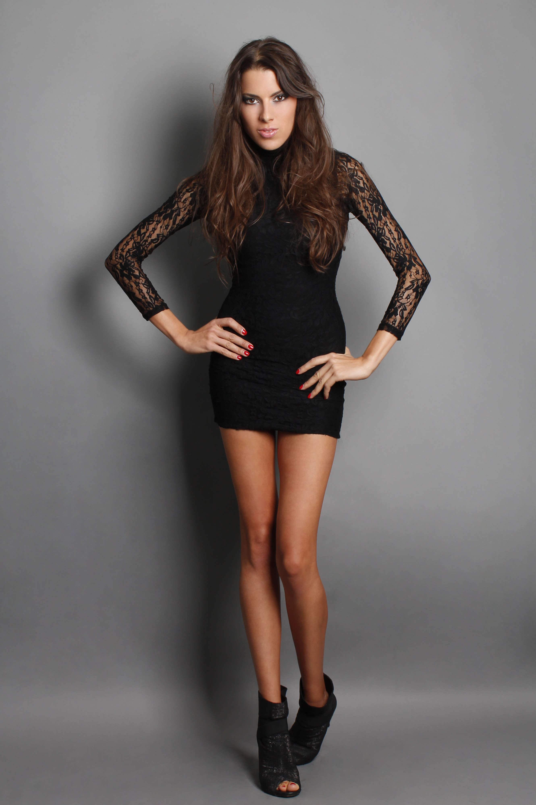

Uvek u trendu: Kožna jaknaKožna jakna je jedan od onih večnih komada, mnogima omiljen pre svega zbog velike mogućnosti kombinovanja. Kožnu jaknu možete da nosite uz različite odevne varijante, elegantne, sportske i opuštenije.Yellow is new blackKad god se dvoumite kako da se obučete za neki događaj ili izlazak, savet modnih stručnjaka je, da sa malom žutom haljinom nikada ne možete pogrešiti.Boja Sunca rado se preporučuje kako za dnevnu, tako i za večernju varijantu.Bezvremenski stil: Moderne male crne haljineMala crna haljina večni je klasik s kojim ne možete pogriješiti, ali iz sezone u sezonu menjaju se trendovi, a tako i izgled malih crnih haljina. .